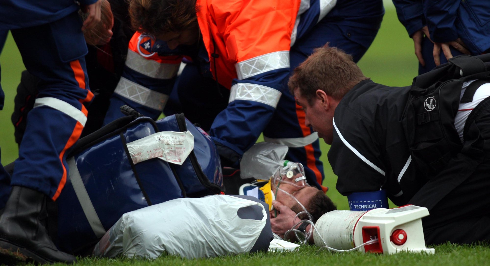

The Day That Changed Everything
December 6th, 2008
In a split second, everything changed. A routine rugby tackle resulted in a broken neck—fractured vertebrae that could have ended not just my career, but my life.
Lying on that field, unable to move, surrounded by paramedics, I faced a terrifying reality: I didn't know if I'd ever walk again. The injury forced me to confront what mattered most and gave me something I never expected—a second chance at life.
That moment became the foundation of everything I do today. It taught me that life is too precious to show up half-heartedly, too short to tolerate work that drains us, and too valuable to waste on teams and cultures that don't bring out our best.
This is my 'why': I help people show up fully—for themselves, for each other, and for the work that matters—because I know firsthand how fragile and precious every moment truly is. When we create environments where people thrive, where they feel valued and engaged, we're not just building better organizations. We're honoring the gift of life itself.
